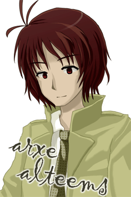

|
Introduction
Shion Hazuki (xion hazki)
She is 17 years old and in the second year of high school.
She always wanted to go to another world.
She was summoned into Atolas, an earth-like planet in Kaldia. She met a girl named Lein and started to study Arka.
She is of a serious cast and is a bit shy. She does not have many friends in the Earth.
She is good at Aikido, the art of weaponless self-defense, and Kendo, the form of fencing using bamboo swords. She likes soba (buckwheat noodle) and carrots.
She likes older men with a sensitive nature and intelligence. She suffers from hay fever.

Lein Yutia (lein yutia)
She is 16 years old and is a student of Arna University. She is in class 1 (Ridia House).
She lives on Nermes-Ridia Avenue in Central Arna City.
She was saved by Shion who came from the Earth and started to teach her Arka.
She is a slow-tempo person and is naively charming. She is very shy and does not have many friends.
She is good at household chores and is a language genius. She is poor at sports. She likes cats.
She likes kind older men. She has a complex about her own immature body.
Alia Ineaato (alia ineaato)
She is 17 years old and is a student of Arna University. She is in class 8 (Raldura House).
She lives on Poen-Fulmiia Avenue in Central Arna City.
She is Lein's friend and is from a family of famous fortune-tellers.
She looks neat and clean, but actually has nerves of steel. She likes to joke around.
She is good at fortune-telling. She is poor at painting. And she drinks a lot.
She likes cute little girls. She has a complex about being tall.

Arshe Alteems (arxe alteems)
He is 25 years old and belongs to Magic Laboratory. He majored in linguistics.
He lives on Tiitel-Ridia Avenue in Central Arna City.
He is the son of Hain Alteems (hain alteems) who works for Invocation Department.
He is a gentlemanly guy. He is an old boy of Arna University and is always kind to its students.
He is good at Yuvel, the martial arts of Arbazard. He has a fundamentally serious mind.
|